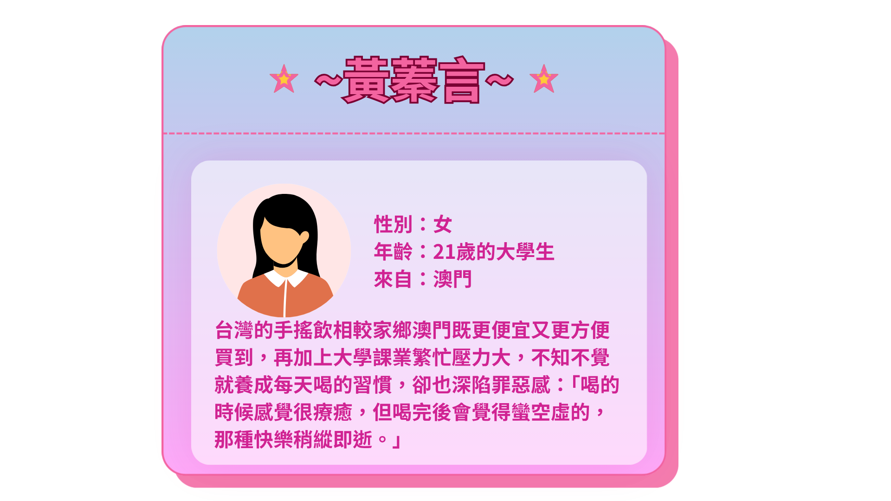
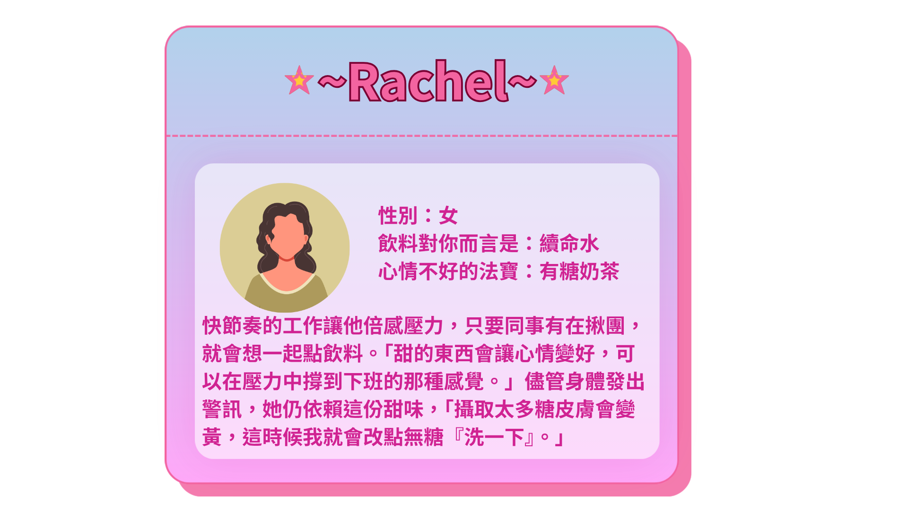
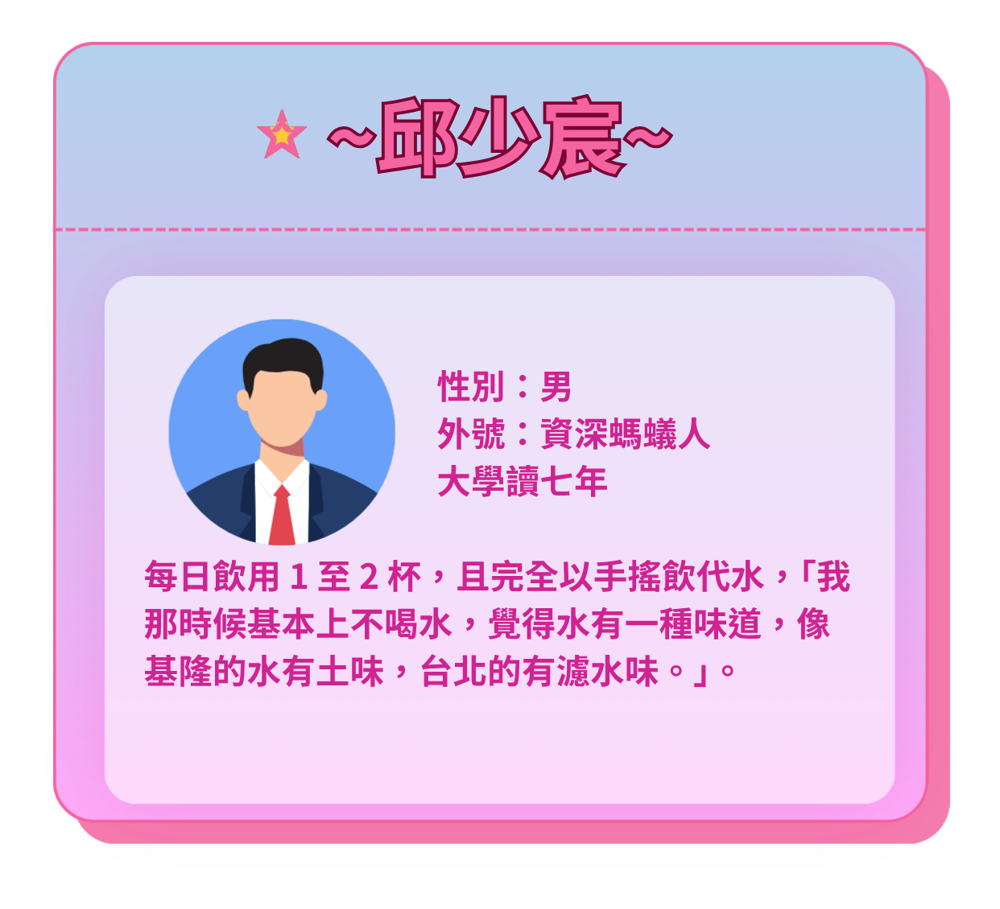

究竟台灣人有多愛喝手搖？
「幾乎走兩步就是一家飲料店，無論是下班時間還是中午休息，隨時隨地都能叫到飲料，這已經變成國人生活中的一種習慣。」，立法委員郭昱晴曾經參與無糖飲料貨物稅減免倡議，她精準地評價台灣人的飲用習慣。
曾在多家連鎖手搖飲店任職的店員王先生（化名）表示：「生意好的時候，一家店一天就能賣出三、四百杯，大家對手搖飲的依賴真的很高。」
手搖飲店家數量早已超越超商
根據財政部最新統計，台灣手搖飲產業年營業額已突破新台幣560億元，展現驚人的消費動能。截至民國114年，全台手搖飲店家數更超過1萬6千家，數量不僅逐年攀升，更已正式超越四大超商的門市總數。
喝進身體的手搖飲量更是驚人。114年全台手搖飲店總營業額約為604億元（60,435,646,000元），若以一杯手搖飲50元估計，台灣一年就賣出超過12億杯手搖飲。
.png)
.png)
一杯又一杯的手搖飲，是獎勵慰藉也是集體制約

「喝手搖飲已經變成我生活很重要的一部分，像是是常常早上我會先想我今天想喝哪一種飲料。」
對黃蓁言而言，手搖飲早已不只是解渴的飲料，而是深深融入生活的一種日常儀式。
來自澳門的她坦言，台灣的手搖飲價格與便利性，是自己養成天天喝飲料習慣的重要原因。「澳門買一杯珍奶換算台幣要120元以上，在台灣只要一半價格，這麼便宜我不可能不買。」再加上校園周邊飲料店林立，「我想喝，隨時都能夠喝得到，這也讓我更容易養成習慣。」
升上大二後，隨著課業壓力增加，她喝手搖飲的頻率也越來越高，從原本一週兩杯，逐漸變成一天一到二杯。久而久之，飲料不只是滿足口腹之慾，更承載著她的情緒。每當完成一件困難的事情，她便會把那杯手搖飲視為犒賞自己的獎勵。她覺得手搖飲就像是在安慰自己，「它存在就好像是在告訴我，我今天做得很好，或者是我今天其實不用對自己要求太高。」
然而，喝手搖飲的滿足感對她來說也非常短暫。她形容喝下第一口的瞬間，「當下就會覺得很滿足、很快樂，可能是感覺到多巴胺在釋放的感覺。」但那份快感很快就會消失，只留下下一次還想再喝的念頭。
「甜的東西會讓心情變好，畢竟（血糖）會變高，就好像是可以再撐一下，撐到下班的那種感覺。」

類似的情況，也出現在Rachel（化名）身上。
一年前轉職到電商產業後，她每天都得面對源源不絕的企劃提案與業績壓力。她回憶，剛進公司時，同事幾乎天天揪團訂飲料，自己不好意思拒絕，便跟著一起點，沒想到久而久之竟成了每天工作的固定儀式。「如果那些同事沒有揪的話，我就不會喝，但因為大家壓力都很大，所以每天都在點。」，她說。
對她而言，手搖飲並不是工作完成後的獎勵，而是工作進行中的支撐。她形容，手搖飲就像自己的「續命水」，每當工作做到一半開始拖延、提不起勁時，喝完手搖飲之後反而會重新振作，「喝了飲料之後，就會覺得說算了，把事情趕快做一做好了。」
其實，黃蓁言與Rachel（化名）的故事並非個案。
每天的一杯手搖飲，有人把它當成完成一天課業後的獎勵，有人視為撐過工作壓力的出口。正是這些看似平凡的日常選擇，累積成台灣一年超過12億杯的手搖飲消費量。
黃蓁言與 Rachel （化名）的經驗也讓我們不得不審視，為什麼一杯飲料總能在疲憊、焦慮或心情低落時，帶來慰藉，甚至讓身體產生強烈的依賴呢？這一切，都與糖分進入身體後如何被吸收，以及如何啟動大腦的獎賞機制有關。
手搖飲裡的糖有兩種獎勵機制

高雄醫學大學公共衛生學系教授李建宏指出，糖分會透過不同生理機制影響人的進食行為。
李建宏解釋，糖進入人體後，首先會啟動身體的「能量管理系統」，糖分進入腸道後，除了作為能量來源被吸收外，也會刺激腸道分泌相關激素。
「（糖）吸收完之後就會影響到腸泌素的分泌，腸泌素經過迷走神經會傳遞到腦部的獎賞相關路徑。像是葡萄糖的訊號會告訴大腦：『這個已經有能量攝取了，你不要再多吃了』，藉此控制食慾。」李建宏詳細說明，這種機制能協助調節飽足感與飢餓感，讓身體維持正常的能量平衡，避免攝取過多或過少的食物。
但糖分不只能讓我們的身體產生能量。李建宏進一步表示，糖同時也會刺激人體的「獎賞系統」。當甜味刺激舌頭上的味蕾，大腦會釋放多巴胺，產生愉悅感。而糖分來到腸道後，也會觸發的多巴胺釋放，「多巴胺除了讓人愉悅外，也具有所謂的『訓練』作用，也就是腦部的獎賞反應訓練。」，李建宏說。
久而久之，即便身體的能量攝取已經足夠，大腦還是會將特定的情緒狀態與攝取糖分的愉悅經驗連結。日日營養的營養師蔡佳穎說：「大腦會覺得吃甜食就是會快樂，這也是為什麼我們在心情不好或壓力大時，會想去找甜的吃，因為大腦會告訴自己『上次吃了這個之後心情很好』。」
但若長期讓高糖食物持續刺激大腦獎賞系統，便容易形成惡性循環。李建宏指出，即便不等同於毒品成癮，但這種依賴模式，會讓人在無意識中攝取過多糖分，成為健康的一大隱憂。
但你在點手搖的時候會注意喝下什麼糖嗎？
然而，一般人在喝飲料的時後，很少思考自己喝下多少糖。
曾在連鎖手搖飲店工作兩年的A先生（化名），便是在親眼看見加入糖漿的過程後，對手搖飲徹底改觀。
當時碩士一年級的A先生（化名），因為愛喝手搖飲，便決定到手搖飲店打工。但這段經歷最讓他印象深刻的並不是茶香，而是手搖飲的果糖添加量。「培訓的時候第一次看到全糖的糖量，真的很震撼，那感覺根本就是在喝糖水。」他說。這種來自第一線的視覺衝擊，徹底改變了他對甜度的認知，「在搖茶的時候，你會聽果糖機出來的聲音，只要按到全糖或少糖（七分糖），糖漿流下的時間長到心裡發毛。」A先生（化名）回憶，「我常想，這杯飲料到底是要多甜，才能下這麼多糖量？」
兩年的工作經驗，讓A先生（化名）也逐漸改變自己的飲食習慣。他發現，即使飲料只加一分糖，對現在的自己來說都過於甜膩。「親眼看到糖漿進去『哇那麼多』，你真的會被嚇到，以後就不敢再點那麼多糖。」
A先生所看到的糖漿，其實正是目前手搖飲產業最常使用的甜味來源高果糖糖漿（High Fructose Syrup, HFS）。
大部分手搖飲業者捨棄傳統砂糖，使用由玉米或樹薯澱粉製成的高果糖糖漿，背後有成本與效率考量。好食課執行長兼營養師林世航指出，高果糖糖漿價格比蔗糖便宜，且本身為液態，不需要額外熬煮即可直接使用，因此成為飲料業最常見的甜味來源之一。
以飲料業常見的HFS 55為例，其甜度與一般蔗糖相近，但主要由約55%的果糖與42%的葡萄糖組成，兩者皆以單醣形式存在於糖漿中。
李建宏分析，相較於需要時間消化分解的醣類，單醣在人體內不需要再經過分解即可直接吸收，因此進入體內的吸收速度極快。尤其飲料中的糖屬於液態糖，在缺乏纖維緩衝的情況下，會導致血糖在短時間內迅速飆升，引發身體生理機制的劇烈反應。李建宏還進一步指出，果糖與葡萄糖在體內的代謝路徑完全不同，果糖對肝臟的負擔尤其沉重：「果糖就比較不好一點，因為果糖不是能量，它主要代謝是在肝臟，會產生肝臟新生的脂質（DNL），這就跟 TG（三酸甘油酯）有關。」
他解釋，葡萄糖會進入循環系統供給全身細胞能量，並向大腦發出「已有能量攝取」的訊號以控制食慾；但果糖卻會繞過這些管控機制，直接在肝臟進行代謝並轉化為脂肪儲存。這不僅容易形成脂肪肝，還會導致血液中的三酸甘油酯升高，並產生尿酸，進而增加痛風與胰島素阻抗的風險。
且液體的手搖飲攝取時缺乏咀嚼過程，這種「無感」的攝取方式，就容易讓人體在短時間內攝入大量糖分卻不自知。蔡佳穎補充說明：「像是喝了一杯500大卡的飲料，但是30分鐘就消化完了，你就會覺得好像沒有喝東西，飽足感比較低，就會讓你想要再進一步的去攝取更多的糖量。」
而且手搖飲裡的糖通常都嚴重超量

根據世界衛生組織（WHO）建議，每日精緻糖攝取量應低於總熱量的10%，如果能低於5%則更理想。以成人每天攝取2000大卡計算，則糖攝取量不應超過50克，若低於25克則更好。然而，市售手搖飲的含糖量往往輕易突破這個健康紅線，例如50嵐的大杯（700ml）、全糖的四季春珍波椰，就大約含有65g的糖。
王先生（化名）表示，以50嵐訓練員工量測糖量的「拉糖」邏輯與甜度級距計算方式推估，大杯全糖飲料的基本添加糖量為「兩湯匙」，以每匙約27克計算，光是添加糖就佔了54克，另外11克則是來自珍珠、波霸與椰果等配料在蜜製與浸泡過程中所吸附的糖分。
那如果消費者是點半糖或微糖呢？根據店內以基本單數乘以甜度比例（半糖為0.5，微糖為0.3）的公式推估，半糖實際上仍會喝下27克添加糖，即便選擇微糖也含有約16.2克。而光是這杯微糖飲料的糖分，就已經佔掉每日精緻糖建議攝取上限（50克）的32.4%，幾乎耗盡了一餐正餐應有的糖分配額，如果又攝取了含糖的麵包、醬料或甜點，糖分攝取便會立刻超標。
成大醫院糖尿病防治中心主任歐弘毅也提醒，手搖飲點微糖就幾乎不甜的迷思常讓消費者放鬆戒心，因為除了茶湯本身添加的糖漿，手搖飲中的配料更堆疊了額外的糖量。蔡佳穎也指出，配料也是影響糖分含量的關鍵因素：「像是珍珠本身在製作與烹煮過程中就會用到糖，有些店家更標榜用黑糖去炒，糖量會一直往上堆疊。」
統計全台八大連鎖手搖飲品牌的熱賣前五名品項，共計40款熱門飲品。從品類分布來看，果茶與調味茶類占35%，奶類飲品（包含奶茶與鮮奶拿鐵類）占30%，加入珍珠、粉粿等配料的特調類飲品占17.5%，其餘則為原茶類飲品。
除了四季春珍波椰之外，若皆以全糖（正常甜）為標準計算，全台八大連鎖手搖飲熱賣品項中，有79%的果茶調味茶、58%的奶類飲品、71%的特調配料飲品，單杯糖量皆超過WHO建議成年人每日50公克精緻糖攝取上限。一杯手搖飲，可能就喝下超過一天建議量的糖。
值得注意的是，果茶與調味茶類不僅是熱門品項占比最高的類別，同時也是超標比例最高的類別之一。許多消費者習慣將水果茶視為較健康的選擇，但在果醬、濃縮糖漿與額外添加糖的影響下，其含糖量往往不亞於奶類飲品。
所以手搖為何有害？
長期攝取高糖，身體究竟會發生什麼變化？答案或許不只在健檢數字裡，也藏在一杯又一杯手搖飲累積的日常之中。

「我以前幾乎不喝水，口渴的時候，腦中第一個念頭不是喝水，而是是不是該再去買一杯飲料了。」
在基隆長大的邱少宸，從小就不愛喝水，他說基隆的水總帶著一股揮之不去的土味。後來到新竹和台北求學，自來水裡濃重的消毒水味又讓他難以接受，於是在經歷重考和轉學的大學七年間，他幾乎每天都會喝一到兩杯手搖飲，而且甜度通常從半糖起跳。
「喝第一口的時候真的會有一種活過來的感覺。」他回憶，「因為很冰、很甜，整個人好像瞬間被喚醒。」
早餐配一杯鮮奶綠加珍珠椰果、下午再來一杯全糖鮮橙綠，成為邱少宸再熟悉不過的日常。對當時的他而言，手搖飲不只是飲料，更是一種情緒寄託。熬夜趕報告時要來一杯，心情低落時要來一杯，甚至和另一半吵架後，也會特地跑到較遠的店家買自己最喜歡的品項。
然而，這些看似微不足道的日常選擇，卻在長年累月之中悄悄改變了他的身體。邱少宸的體重從大學入學時的66公斤一路增加到畢業時的77公斤。更讓他震驚的是，喝手搖飲還累積了一筆不小的開銷：「我有一天突然算了一下，發現自己一個月竟然花了四、五千塊在手搖飲上。」
荷包與體重的雙重警訊，讓邱少宸第一次認真思考，自己是不是已經太依賴手搖飲了。他坦言，過去從來沒有想過含糖飲料對健康的影響，「以前喝飲料不會看卡路里，也不會去想它到底健不健康，就是想喝就喝。」直到體重一路增加，加上每月驚人的飲料開銷，才讓他下定決心開始戒糖。
當糖分成為生活裡無法缺席的存在，對身體的影響，往往緩慢且不易察覺。過量糖分除了增加熱量攝取，更會對肝臟代謝、血管健康與血壓調節造成負擔，提高肥胖、糖尿病與心血管疾病風險。
長期高糖攝取的三大危害

第一條路徑是發炎反應。過量糖分會刺激身體釋放更多發炎物質，使血管長期處於輕微發炎的狀態。當血管內壁因發炎反覆受到刺激與損傷時，血管會逐漸失去原本的彈性與功能，變得比較脆弱。這種慢性發炎雖然平時不容易察覺，卻被認為是許多心血管疾病的重要根源之一。
糖尿病學會
秘書長
嚴愛文

第二條路徑則是影響血壓調節。研究發現，過量糖分可能促使腎臟保留更多鈉離子，也就是俗稱的鹽分。當身體留住過多鈉和水分時，血液量會增加，血壓自然容易升高。此外，糖分還可能刺激交感神經系統，使血管收縮、心跳加快，進一步提高血壓。所以不只是「吃太鹹」才會影響血壓，糖本身也可能成為高血壓的推手。
成大醫院
防治中心主任
歐弘毅

第三條路徑是脂質新生（DNL）。果糖會繞過身體原本控制糖分利用的重要關卡，直接進入肝臟代謝。當肝臟來不及消耗這些多餘的糖分時，就會把它們轉換成脂肪儲存起來。長期下來，脂肪會堆積在肝臟形成脂肪肝，同時血液中的三酸甘油酯也會升高，讓血脂異常，增加肥胖、動脈粥狀硬化與心血管疾病的風險。
日日營養
營養師
蔡佳穎
這樣的健康風險，其實也逐漸反映在台灣民眾的體位變化上。
從近十年的統計來看，台灣18歲以上人口的過重與肥胖率呈現明顯上升趨勢，而且幾乎是一路增加。民國102至105年間，台灣成人過重與肥胖率約為44.7%，代表不到兩人就有一人體重超標；但到了109至113年間，比例已上升至51.3%，等於全台超過一半的成年人都有過重或肥胖問題。
如果觀察性別差異，可以發現男性的過重與肥胖情況比女性更明顯。男性從102至105年的51.9%，一路上升到109至113年的61.2%，代表平均每10位成年男性中，就有超過6人體重超標。
女性雖然比例相對比較低，但也從37.5%上升到41.5%，仍呈現增加趨勢。顯示肥胖不只是個人生活習慣問題，而是逐漸成為全民健康議題。
當高糖飲食、含糖飲料攝取增加，再加上久坐、外食比例提高與運動不足等生活型態改變，身體便更容易進入「脂肪堆積、慢性發炎、代謝異常」的惡性循環。
而體內脂肪持續堆積，除了會造成肥胖外，過度膨脹的脂肪細胞還會引發免疫系統的修復機制，釋放發炎物質。長期下來，身體處於慢性低度發炎，導致細胞對胰島素的反應變差，就容易形成「胰島素阻抗」。
歐弘毅生動地描述胰臟的潰敗過程：「為了維持血糖正常，身體會分泌更多、更多的胰島素。長期負荷下，胰島細胞再也撐不住了，它『過勞』了、停擺了，糖尿病就跑出來了。」。這也是為什麼即便年輕時體感無礙，長期的高糖習慣仍會加速細胞老化，增加罹患第二型糖尿病的風險。
另外許多高血糖患者在初期並無明顯症狀。歐弘毅指出，正常人分泌胰島素是立即反應，但糖尿病前期患者的第一段反應已經消失，血糖會持續在高檔波動。「身體包在糖水裡面，對所有的組織器官都產生傷害。」他說。如果患者因缺乏明顯症狀而不知道自己血糖過高，就會錯失早期治療的機會，進而增加心血管疾病、腎臟病甚至失明的風險。
值得注意的是，糖尿病已不再只是專屬中高齡族群的疾病。過去第2型糖尿病因多發生於40歲以上成人，曾被稱為「成年型糖尿病」，但近年臨床上卻出現愈來愈多年輕患者。歐弘毅就觀察到一個令人憂心的趨勢：「在過去5年，我們統計健保資料庫發現，40歲以下發病之年輕人增加25%，這是非常可怕的。」。他進一步指出，這群年輕患者通常在工作場域中動得少、吃得多，且對添加糖的攝取缺乏自覺。
蔡佳穎則分析了手搖飲的推波助瀾作用：「手搖飲佔台灣人精緻糖來源可能有到四、五十趴，它是一個攝取進去很『無感』的食物，讓人沒有意識到自己在超量攝取。」。這種液態糖的快速吸收，導致血糖劇烈波動，也加速了糖尿病年輕化的進程。
從糖尿病死亡統計人數來看，過量糖分所造成的肥胖問題，也進一步推升了糖尿病的發生風險。根據國民健康署統計，目前全台約有超過200萬名糖尿病患者，且每年仍以約2萬5千人的速度持續增加，其中九成以上屬於與肥胖、飲食及生活型態密切相關的第二型糖尿病。
民國97年至113年間，台灣糖尿病死亡人數整體呈現上升趨勢，且男性死亡人數長期略高於女性。97年糖尿病死亡人數約8千餘人，至111年已攀升至超過1萬2千人，創下近年高峰，即使後續略有下降，整體死亡規模仍明顯高於十多年前。
戒掉解方？
說了這麼多高糖飲食的危害，我們究竟該如何從根源改善台灣人愛喝高糖手搖飲的飲食習慣？
答案比想像中更複雜。
在台灣，幾乎沒有人不知道喝太多手搖飲對身體不好。從飲料杯上的熱量標示、新聞媒體的健康報導，到學校與醫院的衛教宣導，多數民眾都聽過「少糖比較健康」這句話。然而，知道與做到之間，卻存在一道難以跨越的鴻溝。
根據台灣健康聯盟114年「食安五環2.0政策暨減糖新生活」網路問卷調查，在全國22縣市、1113位年滿20歲以上受訪者中，高達92.3%的受訪者認為含糖飲料對健康「有點危害」或「非常危害」，代表大多數民眾其實已經意識到含糖飲料可能帶來的健康風險。
手搖飲標示的部分，則約有三分之二（66%）的民眾表示購買飲料時會注意熱量標示。
在糖攝取知識方面，也有約66.5%的受訪者知道世界衛生組織（WHO）建議每日精製糖攝取量不應超過50公克，大約一杯全糖手搖飲的含糖量。
圖表五
民眾對糖分危害的認知調查
資料來源：台灣健康聯盟114年食安五環2.0減糖新生活問卷（n=1,113）。
但還是有近40%的受訪者每週喝3次以上含糖飲料，且有57.2%的受訪者購買含糖飲料時偏好購買手搖飲。
且在手搖飲料的甜度選擇上，選擇半糖或以上的受訪者有28.2%，可以說每四個人中，就有至少一個人習慣喝半糖或更甜。
代表民眾即使知道糖的危害，也未必能因此改變既有的飲食習慣。
圖表六
含糖飲料飲用習慣
資料來源：台灣健康聯盟114年食安五環2.0減糖新生活問卷（n=1,113）。
知道與做到的鴻溝：罪惡感下的逃避心理
這種知道有害但選擇忽視的矛盾，那些每天與客人們打交道的手搖飲店員，有著最深刻的體會。
王先生（化名）就提及，在他工作過的幾家飲料店，都經常遇到顧客選擇高甜度的飲料。最讓他印象深刻的是一些工廠作業員常客，經常點名要喝比全糖更甜的「多糖」紅茶。「雖然知道多糖很不健康，但客人要點，我們還是做給他。」他說。
同樣曾在飲料店工作約半年的Leo（化名）也有相同的經驗。
他最難忘的是一位年約60歲，身材豐腴且膚況欠佳的奶奶，每天固定上門購買「雙倍全糖珍珠奶茶」。他曾試圖婉轉提醒對方減少糖量，卻遭到不滿回應，「有善意提醒過，但她會生氣罵人，後來我甚至會假裝加糖給她看，畢竟喝這麼甜真的對身體不好，而且感覺她心理對糖也有一種依賴。」他說。
這份「偷偷減糖」的舉動，來自Leo（化名）在手搖飲店看見的震撼畫面。「珍珠在煮的時候要加很多糖去炒，煮完又泡在糖漿裡，以一次煮一萬克珍珠來說，大約就要用掉一整包家用黑糖。這讓我現在喝飲料時會擔心健康。」他說。
儘管Leo（化名）在吧台後看見了健康的威脅，他還是觀察到大多數消費者在購買手搖飲時，仍傾向忽視成分標示：「店裡雖然有標示，但幾乎沒人在看，大家選選就走，不看熱量也不看糖量。」反映出多數消費者知道有害，卻還是選擇忽略的心理狀態，而黃蓁言便是其中之一。
她坦言自己知道手搖飲不健康，也知道飲料杯上標示著熱量與糖量，但從來不會主動去看。「我都已經決定要喝了，知道它不健康也還是會喝，所以覺得沒什麼看的必要。」黃蓁言說，如果真的在意那些數字，自己可能一開始就不會購買飲料。這種矛盾心態也顯示問題從來不只是資訊不足，而是人們在面對誘惑時，往往會優先選擇眼前的滿足感。
個人自由還是公共負擔？政策介入的正當性
既然手搖飲的甜蜜誘惑讓人如此難以抗拒，那麼是否要用政策強制改變民眾高添加糖攝取的飲食習慣呢？台灣健康聯盟理事長吳玉琴給出了肯定的答案。她認為高添加糖飲食不只是個人自由，更是公共衛生議題，「個人的選擇卻對身體產生不好的影響，接下來就是公共衛生的問題，社會的醫療支出、健康的支出就增加。如果是不健康的行為，政策是有責任要來導引的。」
這並非危言聳聽，郭昱晴引述數據警示，過量糖分攝取引發的疾病，每年造成台灣醫療支出高達約233億元。她特別強調液體糖吸收極快，對身體的風險甚至高於固體甜食，因此含糖飲料應成為政策控管的重中之重。
各國管制策略：從糖稅到分級標示
而如果要限制民眾攝取添加糖，政策該如何設計？近年來許多國家開始推動「糖稅」（含糖飲料稅），希望透過提高含糖飲料價格，降低民眾的購買量，同時促使業者調整配方、減少糖分。吳玉琴指出，英國的經驗證明課稅能有效改變廠商行為：「英國依含糖量課稅，廠商為了避開最高稅率，會主動調整配方減糖。」。除了英國與泰國的分級課稅，墨西哥採取固定比例稅，新加坡則透過飲料健康分級與廣告限制，都試圖降低高糖飲品的市場吸引力。
台灣的現狀：無糖免稅的誘因與侷限
相較之下，台灣目前尚未正式開徵針對手搖飲或市售含糖飲料的「糖稅」，而是從民國115年開始，先推行針對包裝飲料的「無糖飲品免徵貨物稅」政策。郭昱晴解釋，「先用所謂的無糖飲料免稅的方向，可能會比較溫和，大家比較不會有心理上的抗拒。」希望透過無糖飲料免稅的價格誘因，能引導民眾逐步改變選擇。
然而，吳玉琴則對成效抱持觀察態度：「免稅利益是不是會真的轉化成銷售端的降價回饋給消費者，還是有待觀察。」目前的政策對瓶裝飲料降幅有限（如25元飲料僅降約3元），民眾往往對降價根本沒有感覺。好食課執行長林世航營養師也認為，除非價差大到足以影響需求，否則難以改變消費習慣；但若降價過猛，又會對產業造成劇烈衝擊。此外，針對連鎖店與非連鎖店課稅的公平性，也常引發產業端的抗拒。
除了健康教育之外，「價格」其實也是影響民眾飲食選擇的重要因素。從調查結果來看，如果含糖飲料價格提高5至10元，有高達83.6%的受訪者表示會「一定會」或「可能會」減少購買，代表價格調整確實可能影響消費行為，也顯示透過糖稅或價格機制來降低含糖飲料攝取，具有一定可行性。
另外，若政府或店家改以「獎勵」方式鼓勵健康選擇，效果似乎也相當明顯。調查顯示，若比照環保杯優惠模式，只要購買無糖飲料就能享有折扣，有高達89.2%的受訪者表示願意改買無糖飲品。其中，超過一半的人認為，只要優惠3至5元，就足以提高自己選擇無糖飲料的意願，顯示小額誘因其實就可能帶來飲食行為改變。
改善高糖飲食習慣未必只能依靠「限制」或「禁止」，若能搭配價格調整與健康誘因，例如提高高糖飲料成本、提供無糖飲品優惠，或增加清楚的糖分標示，都可能讓民眾在日常生活中更自然地做出較健康的選擇。面對糖尿病與肥胖問題，如何讓「少糖」變得更容易、更有誘因，或許正是台灣未來健康政策值得努力的方向。
圖表七
糖稅、購買意願
資料來源：台灣健康聯盟114年食安五環2.0減糖新生活問卷（n=1,113）。
手搖飲規管的技術高牆：客製化與隱形糖分
然而，要限制手搖飲的購買，仍面臨技術上的困難。
林世航與吳玉琴皆指出，瓶裝飲料有標準生產線，但手搖飲每家店的配方、甜度分級（全糖、半糖、微糖）皆高度客製化。這導致政府在稽查是否「真的無糖」時，行政成本極高。
吳玉琴坦言：「手搖飲每一家店的配方、加的東西都不一樣，你怎麼課稅？很難稽查。」此外，即便茶湯無糖，配料（如珍珠、芋圓）多在蜜製過程中加入大量糖分。這讓「無糖」的定義在手搖飲操作中顯得複雜。
因此在強制課稅到位前，吳玉琴建議效法環保杯政策，推動「無糖減價」，以提高民眾的選擇意願：「如果無糖減5塊、10塊，民眾增加購買無糖的意願會提高，這是在手搖飲政策中我們可以持續倡議的。」這不僅能給予消費者實質誘因，也能在充滿挑戰的規管環境中，開闢出一條相對溫和且具社會共識的減糖之路。